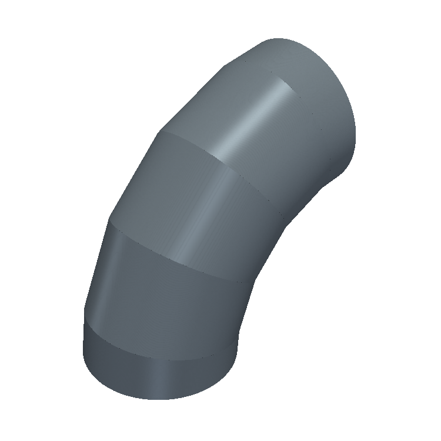
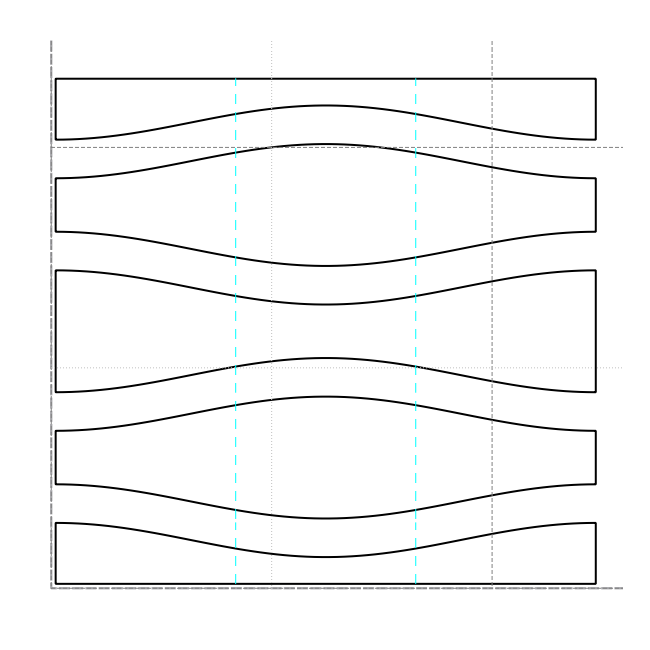
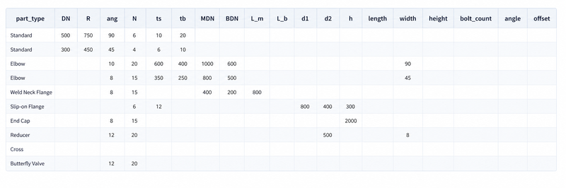
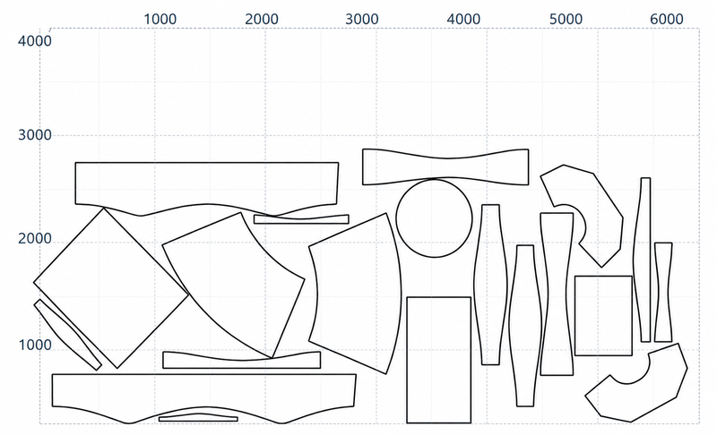
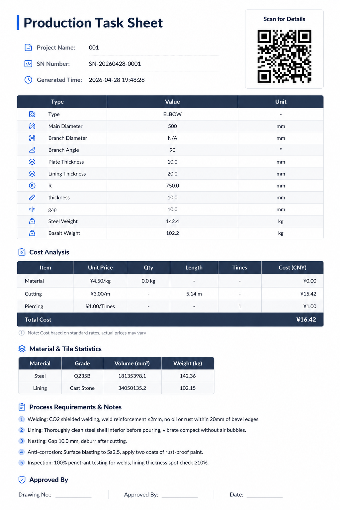

From pipe parameters to cut-ready DXF in seconds. Analytical intersection solver · Intelligent nesting · Production-ready output.
Fabrication shops lose thousands per project to manual calculations, trial-and-error fitting, and expensive enterprise software.
Engineers spend 4-8 hours per project manually calculating expansions, intersections, and creating drawings.
Manual calculations aren't perfect. Field fit issues cost $5,000-$50,000 per incident in rework and delays.
CAD packages like AutoCAD Plant 3D cost $10,000+/year. Overkill for pipe-only work with steep learning curves.
PipingCAD automates the entire pipeline — from pipe specification to nesting, G-code, cost reports, and production-ready DXF files.
Specify diameter, thickness, bend radius, material, and welding standards. Our intelligent engine handles the complex geometry.
Our proprietary solvers compute precise 3D models, intersection curves, and flat patterns using exact mathematical methods.
Get DXF files with embedded QR codes, cutting lists, and cost reports. Ready for your CNC machines.
All standard pipe fitting geometries pre-configured. From straight pipes to complex Y-Branches and Square-to-Round transitions.
Multi-segment mitered - Configurable R, angle, segment count
Elbow with two different bend radii - variable wall thickness
Main + branch pipe intersection - Configurable branch angle
Concentric reducer with variable taper ratio
Eccentric reducer with offset centerline
Rectangular to circular transition duct
Two legs at configurable angle off main pipe
Straight pipe section with configurable length and wall
Oval cross-section pipe for ventilation and ducting
Square/rectangular duct with configurable dimensions
Square/rectangular duct elbow - Configurable angle 0-180
Helical auger blade with optional liner
Circular flange with bolt holes - Configurable PN rating
Every feature designed to reduce waste, eliminate errors, and speed production.
Full ISO/ANSI standard parts: elbows, tees, cones, flanges, Y-branches, and custom fittings with instant parameterization.
Exact mathematical solutions for pipe intersections. No approximations. Micron-level precision ensures perfect fit.
Shapely-powered optimization maximizes sheet utilization. Typical savings: 15-25% reduction in material costs.
Export production-ready DXF with multi-layer output. Also generates CNC G-code for Fanuc, Amada, and Trumpf controllers.
Full cost breakdown per part: material cost, laser cutting, bending, welding, profit margin, and VAT. Auto-generates PDF invoices with 3D screenshots.
Built-in ASME/EN pipe standards database. Batch task queue with priority levels, retry logic, and CLI mode for headless automation.
Every parameter is fully adjustable - segment count, bend radius, wall thickness, angle, and material. Try one example below.


Four optimization strategies powered by genetic algorithms. Auto-rotation at 0/90/180/270. Typical savings: 15-25% material utilization improvement.


Every DXF carries complete Production Reports and Digital DNA - scan the QR code to access all process information.

See how quickly you can go from pipe specification to production-ready DXF files.
Start free, scale as you grow. No hidden fees.
Essential 6 fittings
For fabrication shops and engineers
or $499/month
For large organizations
Most users are productive within 2-3 hours. The interface is designed for engineers and drafters, with intuitive parameter input and clear visual feedback.
PipingCAD exports DXF (R2000+ compatible with all major CAD systems), STEP for 3D model exchange, and PDF production reports with embedded QR codes.
Our analytical geometry solver achieves micron-level precision. Unlike approximation methods, our calculations are based on exact mathematical solutions.
Yes! PipingCAD auto-detects installed CAD software and can push drawings directly into your CAD space. No manual import/export steps required.
Start your free trial today or contact us for a personalized demo.